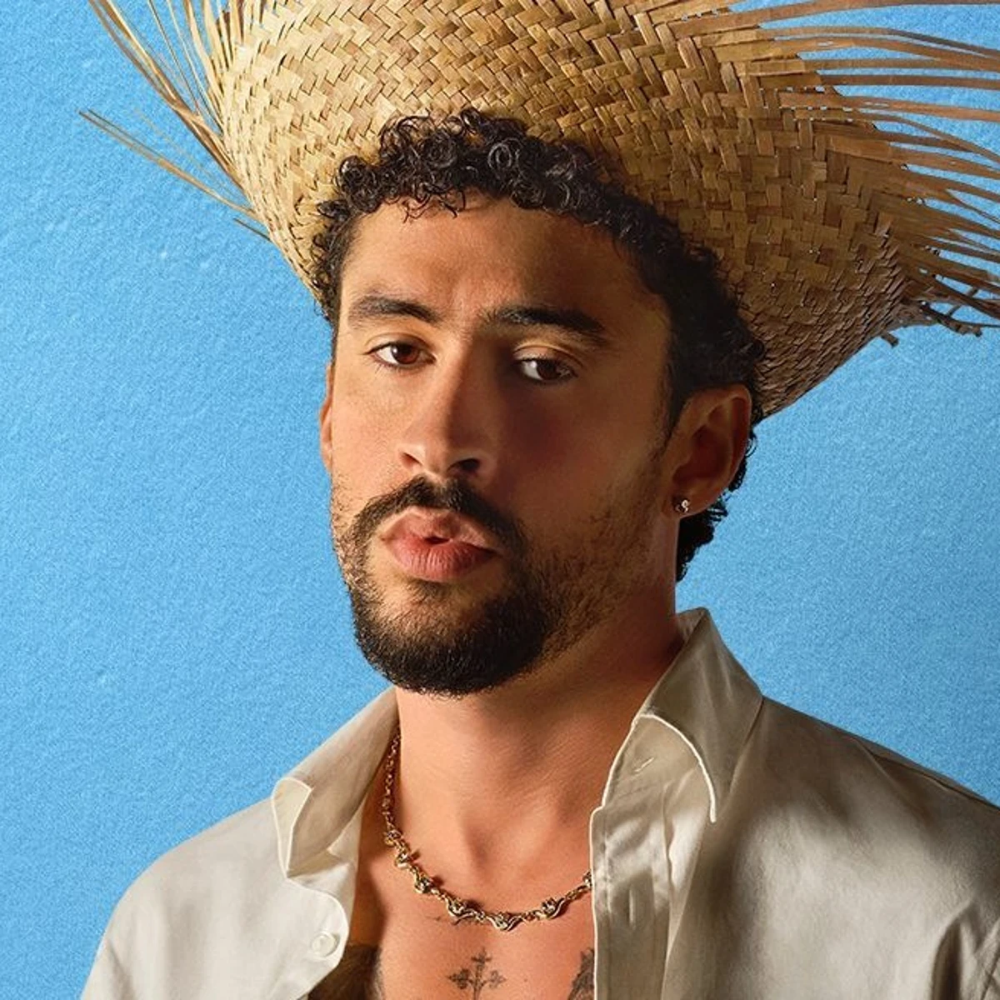

Trayectoria Musical
Benito Antonio Martínez Ocasio, conocido mundialmente como Bad Bunny, ha sido una figura clave en la internacionalización de la música en español a nivel global.

El icono global del género urbano latino.
Benito Antonio Martínez Ocasio, conocido mundialmente como Bad Bunny, ha sido una figura clave en la internacionalización de la música en español a nivel global.

Resumen informativo de sus lanzamientos más destacados:
| Álbum | Año | Canción Destacada | Género Principal |
|---|---|---|---|
| X 100PRE | 2018 | Caro | Trap Latino / Pop |
| YHLQMDLG | 2020 | Safaera | Reggaetón Clásico |
| Un Verano Sin Ti | 2022 | Me Porto Bonito | Tropical / Reggaetón |
| Nadie Sabe Lo Que Va a Pasar Mañana | 2023 | Monaco | Trap / Hip-Hop |